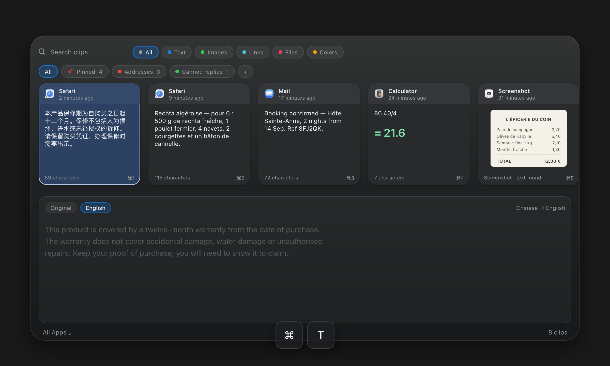

A searchable history
Press ⇧⌘V anywhere and every recent copy is there — text, links, images, files, colours. Type a sentence to find one, Return to paste it. A key:value operator narrows to when (after:7d) or where (app:Safari) it came from.
From clipboard to notes and calendar. A free clipboard manager for macOS: everything you copy, searchable — and the screenshots worth keeping turned into notes and events. Nothing ever leaves your Mac.
Everything you copy, put to work
MemoryClip keeps it, reads it, and turns the ones worth keeping into notes and calendar events.
Text, links, images, files and colours — searched by what they say, where they came from and when.
Pinboards for the keepers, notes from screenshots, events from invitations.
No sync, no accounts, no analytics. Even the language models run on your Mac.
Press ⇧⌘V anywhere and every recent copy is there — text, links, images, files, colours. Type a sentence to find one, Return to paste it. A key:value operator narrows to when (after:7d) or where (app:Safari) it came from.
One key sends it to Obsidian, a folder of Markdown files, Apple Notes or a Shortcut — with the picture and the text it found, filed by the day you captured it.
Named sets — addresses, canned replies, commands — as chips over the clips. ⌘P files one under a board, and inside a board clips keep the order you put them in.
Copy an API key, a token or a one-time code and it is sealed with a key that lives in this Mac's Secure Enclave. The history shows a mask; the value asks for Touch ID before it is shown or pasted.
Take a screenshot and MemoryClip pulls the text out of it, in 30 languages, so you can search for a picture by what it said.
Copy something in a language you don't read — or screenshot it — and the preview shows it in one you do, a ⌘T away from the original.
No sync, no accounts, no analytics. Everything runs on your machine, including the language models. The one network call it can make is an update check you switch on yourself.
Tracking parameters — fbclid, gclid and friends — are stripped on the way in, and the cleaned link goes straight back on the clipboard. Your next ⌘V pastes it without opening the panel.
Copy an invitation, or screenshot one, and ⌘E makes it an event — the time, the Zoom link, the address. With suggestions on, an appointment-shaped clip is offered: Add, Edit…, or Not Now, and nothing is written until you say so.
The panel opens over whatever you're doing and closes the moment you're done. Newest first, already focused. ⌘S saves one as a note.
Search
Say roughly what it said, or say where and when it came from. Both work as you type.
app: | clips from an app, matched by name prefix — app:saf reaches Safari |
is: | a state — pinned, screenshot, noted, event, translated, secret |
in: | a pinboard, matched by name prefix (in:pinned is Pinned) |
type: | a clip kind — text, image, link, file, color |
after: | copied on or after — today, yesterday, 2026-09-01, 7d, 2w, 3m |
before: | copied before — the same values |
on: | copied on one day — the same values |
that error about the deploy failing→ finds the clip that says deployment to production failed
failing→ reaches failed.
screenshotsreaches screenshot. Words are reduced to the stem they share with their dictionary form, and a stem is only ever a prefix of what you typed — so it can widen a search and never narrow it.
app:"Google Chrome" -app:Slack→ a value with spaces takes quotes, and a leading
- excludes.Typing a key and : offers the values it knows — source apps most-used first, pinboards in strip order. A lone ? in the field shows the whole table as a cheat-sheet.
Try it here
Click it, then type. Arrow keys move, Space previews, ⌘T translates the Chinese clip. Every clip in it is made up — nothing is read from your clipboard.

Everywhere
The history is never more than a key, a click or a Shortcut from wherever you are.
Opens the panel newest clip first, list already focused. Return pastes, ⌘1–⌘9 paste any of the first nine directly.
The menu-bar glyph gives the last five clips under a Recent Clips header, then Open MemoryClip and Pause Capture, Settings, Permissions and Clear All History.
An automation can grab what you copied without you touching the panel. All four are read-only, and secret clips are invisible to them.
Install
Five minutes, and one screen that will try to stop you. Here's how to get past it.
Use the Download for Mac button — it gives you a file ending in .dmg, in your Downloads folder.
Double-click the downloaded file. A window opens with the MemoryClip icon and an Applications folder. Drag the icon onto the folder, then close the window.
Open your Applications folder and double-click MemoryClip. macOS will say it cannot be opened because it is not from an identified developer. This is expected. Click Done.
Open System Settings → Privacy & Security, scroll down to the Security section, and you'll see a line about MemoryClip being blocked. Click Open Anyway, then confirm with Touch ID or your password.
Copy a few things, then press ⇧⌘V from any app. Everything you copied is there, waiting.
Two commands, and brew upgrade keeps it current afterwards. The trust line is Homebrew's own check on third-party sources.
brew tap yaminerl/memoryclip https://github.com/YamineRL/MemoryClip
brew trust yaminerl/memoryclip && brew install --cask memoryclipThis handles the Gatekeeper step for you, so steps 3 and 4 don't apply.
Drag MemoryClip from your Applications folder to the Trash — or brew uninstall --cask memoryclip if you installed it that way. Your clip history lives in your user Library folder and goes with the app if you add --zap to the Homebrew command.
Keyboard
There are more, but these are the ones you'll use every day.
| ⇧⌘V | Open the panel from any app |
| ↑ ↓ | Move through the list |
| Return | Paste the selected clip |
| ⇧Return | Paste it as plain text, dropping fonts and colours |
| ⌘1–⌘9 | Paste any of the first nine directly |
| ⌘C | Copy the selected clip, leaving the panel open |
| ⌘I | Edit the clip in the preview pane |
| Space | Preview the clip; again on a picture for full size |
| ⌘T | Flip the preview between the original and its translation |
| ⌘S | Save the clip as a note |
| ⌘E | Add the clip to your calendar, if it names a date |
| Esc | Back out, one layer at a time |
Shortcuts and Spotlight can reach the history too: four App Intents — Search Clips, Get Latest Clip, Copy Clip and Open MemoryClip — so an automation can grab what you copied without you touching the panel. All four are read-only, and secret clips are invisible to them.
Privacy
Short version: nothing you didn't ask for. The full privacy page →
No sync service, no accounts, no analytics, no crash reporting — the text recognition and translation run on your Mac. It makes exactly one kind of network request, and only if you ask: an anonymous daily read of the public releases page, off by default, which tells you a new version exists and never installs anything itself.
Copies marked confidential by password managers are ignored, and card numbers are filtered out of what it reads. An API key or a one-time code is recognised and kept encrypted — sealed with a key in the Secure Enclave that never leaves this Mac — and asking for one back needs Touch ID. You can lock the whole history behind Touch ID, too.
No Screen Recording, no Input Monitoring. Folder access only for the screenshot folder and the notes folder you choose, and only if you use those features. Calendar access is write-only: it can add an event and cannot read one.
The newest 5,000 clips are kept and anything older than 90 days is swept away. Both numbers are yours to change, up to Unlimited and a year, and Clear All History is one menu item. Pinned clips are exempt from the sweep.
FAQ
Apple charges developers $99 a year to sign apps in a way that opens without a warning. MemoryClip is free and unsigned, so macOS treats it as unknown rather than unsafe — it has no idea what the app is, and says so. Steps 3 and 4 of the install get you past it once; Homebrew handles it for you. Every line of the source is public on GitHub if you'd like to look first.
No. Copies marked confidential by password managers are ignored — the standard pasteboard opt-out markers, and known credential apps outright — and card numbers are filtered out of what it reads. Any app you name in Settings → Privacy → Excluded apps is skipped too. An API key or a one-time code is recognised and kept encrypted with a key in the Secure Enclave, and asking for one back needs Touch ID.
On this Mac only, in an owner-only store at ~/Library/Application Support/app.memoryclip/. The newest 5,000 clips are kept and anything older than 90 days is swept away; both numbers are yours to change, up to Unlimited and a year. Pinned clips are exempt, and Clear All History is one menu item.
Nothing about you. It is off by default, and with it off MemoryClip makes no network calls at all. Switched on in Settings → General → Updates, it asks api.github.com once a day what the newest release is — an unauthenticated request to a public endpoint carrying no identifier of any kind. If there's something newer you get one notification, once per version. It never installs anything itself.
Drag MemoryClip from your Applications folder to the Trash — or brew uninstall --cask memoryclip if you installed it that way. Your clip history lives in your user Library folder and goes with the app if you add --zap to the Homebrew command.